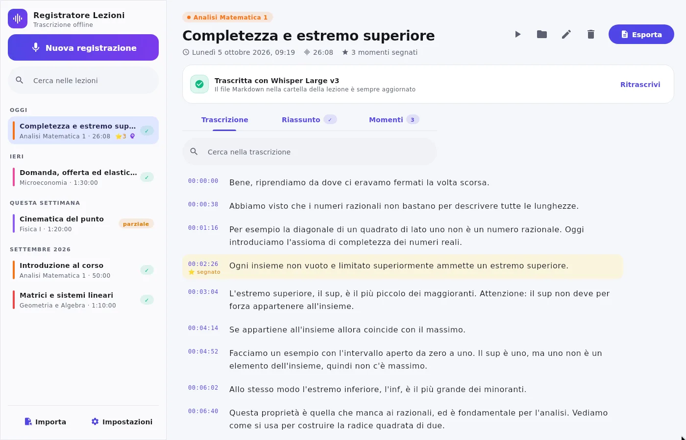
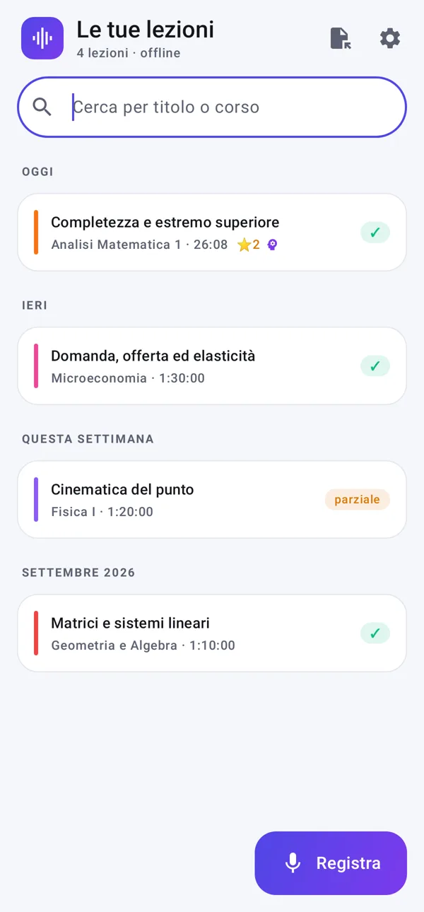
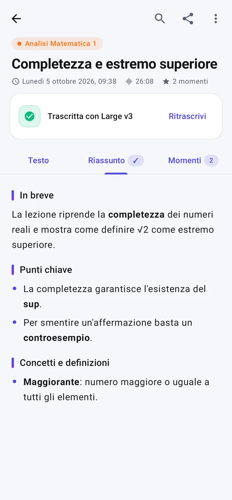

Registra la lezione.
Ritrova tutto scritto.
L'app che registra le lezioni universitarie e le trascrive automaticamente sul tuo telefono o computer, anche senza Internet. Esporta in Markdown per i tuoi appunti.
Com'è fatta
Schermate reali dell'app: lezioni colorate per corso, trascrizione, riassunto e momenti segnati.



Tutto quello che serve a lezione
Pensata per lezioni lunghe: premi “Registra” all'inizio e al resto pensa l'app.
Registrazione sempre completa
Continua a schermo spento. Il file viene salvato ogni 5 secondi: anche se l'app si chiude o la batteria finisce, l'audio è al sicuro.
Trascrizione in tempo reale
Il testo compare durante la lezione e si aggiorna da solo ogni ~30 secondi. Oppure trascrivi dopo, quando vuoi.
100% sul tuo dispositivo
Usa Whisper (whisper.cpp) in locale, su telefono o computer: nessun audio viene caricato online. Funziona anche in aula senza rete.
Export in Markdown
File .md o .txt con orari per paragrafo. Condividi, salva, o tieni una cartella (Obsidian, Drive…) sempre aggiornata in automatico.
Riascolta un passaggio
Tocca una frase della trascrizione per sentire quel punto della lezione. Cerca parole in tutto il testo.
Importa audio esistenti
Trascrivi anche registrazioni fatte con altre app: su Android mp3, m4a, ogg, wav e vocali condivisi da WhatsApp o Telegram; su computer anche video e registrazioni di Teams/Zoom (mp3, m4a, wav, mp4…).
Segna i momenti importanti
Un tocco su ⭐ durante la lezione, anche dalla notifica: il passaggio resta evidenziato nella trascrizione e finisce nei punti chiave del riassunto.
Parole chiave del corso
Scrivi una volta i termini tecnici e i nomi del corso: la trascrizione e il riassunto li scriveranno sempre giusti.
Appunti pronti da studiare
Ogni lezione diventa un file Markdown ordinato, con titolo, corso, data e i paragrafi con l'orario in cui sono stati detti. Perfetto per Obsidian, Notion, Typora o qualsiasi editor.
Attiva l'esportazione automatica: l'app aggiorna il file nella cartella che scegli mentre la trascrizione procede.
Scarica per il tuo dispositivo
Stesse funzioni ovunque: registrazione, trascrizione offline con Whisper, Markdown sempre aggiornato. Al primo avvio scarichi una volta il modello di trascrizione.
macOS
macOS 12 o successivo. Sui Mac Apple Silicon (M1, M2, M3, M4…) usa la GPU: trascrizione molto veloce.
Apple Silicon (.dmg) Mac Intel (.dmg)Windows
Windows 10 e 11 a 64 bit. Installazione per il solo utente, senza permessi di amministratore.
Scarica .msiPrimo avvio su Mac: l'app non è firmata da Apple. Se macOS la blocca, apri Impostazioni di Sistema → Privacy e sicurezza e premi Apri comunque. Su Windows, se compare “Windows ha protetto il PC”, scegli Ulteriori informazioni → Esegui comunque.
Installazione su Android in 3 passi
L'app non è sul Play Store: si installa direttamente dall'APK e poi si aggiorna da sola.
- Scarica l'APK dal telefonoTocca “Scarica l'APK” qui sopra (o vai su Releases).
- Aprilo e consenti l'installazioneAndroid ti chiederà di autorizzare il browser a installare app: conferma e premi “Installa”.
- Scarica il modello e registraAl primo avvio concedi microfono e notifiche e scarica il modello di trascrizione (serve Internet solo questa volta).
Scegli la qualità
I modelli più grandi sono più precisi ma più lenti. Puoi cambiarlo quando vuoi e ritrascrivere le lezioni.
| Modello | Dimensione | Ideale per |
|---|---|---|
| Tiny | 32 MB | Telefoni datati, bozze veloci |
| Base predefinito | 60 MB | Trascrizione in tempo reale su quasi tutti i telefoni |
| Small consigliato | 190 MB | Molto più preciso in italiano |
| Large v3 Turbo | 474 MB | Massima qualità; ottimizzato per trascrivere dopo la lezione (fino a ~4 volte più veloce) |
La tua voce resta sul tuo dispositivo
Registrazioni e trascrizioni vengono elaborate e salvate solo sul telefono o sul computer. L'app si collega a Internet esclusivamente per scaricare il modello di trascrizione e per controllare gli aggiornamenti. Il codice è open source e verificabile su GitHub.
Domande frequenti
Consuma molta batteria?
La registrazione consuma poco. La trascrizione in tempo reale usa il processore: se vuoi risparmiare, disattivala nelle Impostazioni e lascia che la trascrizione parta alla fine della lezione, magari con il telefono in carica.
Quanto spazio occupa una lezione?
Circa 115 MB per ora di audio. Attivando “Comprimi l'audio dopo la trascrizione” scende a circa 11 MB per ora.
Posso registrare con lo schermo spento o usando altre app?
Sì. La registrazione continua in background con una notifica, da cui puoi anche mettere in pausa o fermare.
Funziona con lingue diverse dall'italiano?
Sì: inglese, spagnolo, francese, tedesco oppure rilevamento automatico, da scegliere nelle Impostazioni.
Come si aggiorna?
Su Android l'app controlla da sola se c'è una nuova versione e la installa con un tocco. Su Mac e Windows ti avvisa e apre la pagina di download.
Dove salva le lezioni la versione per computer?
Nella cartella Documenti → Registratore Lezioni: ogni lezione ha una sua cartella con l'audio e il file Markdown sempre aggiornato. Puoi scegliere un'altra cartella, per esempio una sincronizzata con iCloud, OneDrive o il vault di Obsidian.
Funziona sui Mac con processore Intel?
Sì: scarica la versione “Mac Intel”. La trascrizione usa il processore (non la GPU) ed è più lenta che sui Mac Apple Silicon.
Posso registrare le lezioni?
Molti atenei e docenti lo consentono per uso personale di studio, ma non sempre: chiedi al docente se non sei sicuro e non diffondere le registrazioni.